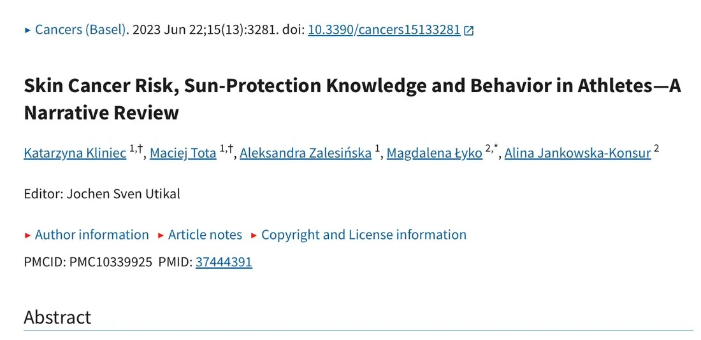

01 / NARRATIVE REVIEWUV + SPORT

SUPPLIED CLIPPING VIEW ↗Sun protection for outdoor athletes
A narrative review of 62 articles reports that outdoor sports participants do not protect themselves adequately from the sun.
Kliniec et al.
Original title
Skin Cancer Risk, Sun-Protection Knowledge and Behavior in Athletes—A Narrative Review